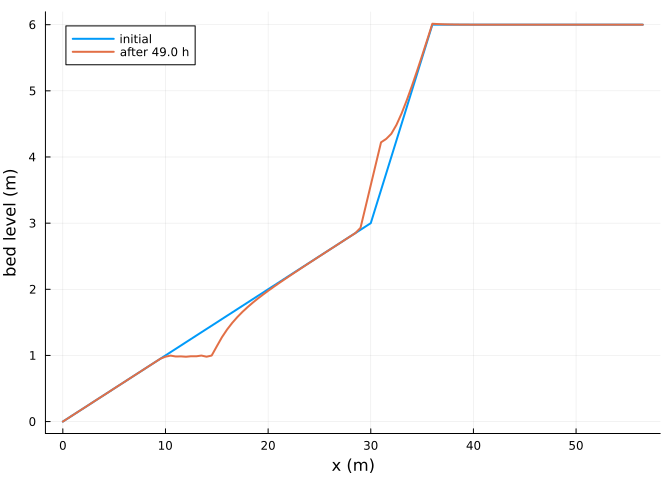

AeoLiS configuration files
Simon Frost
- Overview
- Reading a configuration file
- Running it
- Agreement with aeolis-python
- Writing configuration files
- References
Overview
AeoLiS models are usually described by a configuration file, aeolis.txt, with one key = value line per parameter and input data in separate text files. Aeolis.jl reads these files, runs them as aeolis run does, and writes netCDF output in the AeoLiS layout. This vignette runs one of the AeoLiS regression cases, a transect with tides, waves, runup, vegetation and avalanching, and compares the result with aeolis-python (de Vries et al. 2023).
ENV["GKSwstype"] = "100"
using Aeolis
using NCDatasets
using PlotsReading a configuration file
The case ships with the package tests. Its configuration file names the grid, bed, wind, tide and wave files, which read_config loads relative to the file’s directory. Keys that AeoLiS itself ignores (this file has six, such as process_nelayer) are skipped with a warning, which is hidden here.
case = joinpath(pkgdir(Aeolis), "test", "data", "case1_small_waves")
readdir(case)9-element Vector{String}:
"aeolis.txt"
"reference.nc"
"tide.txt"
"veg.grd"
"wave.txt"
"wind.txt"
"x.grd"
"y.grd"
"z.grd"p = read_config(joinpath(case, "aeolis.txt"))AeolisParameters
time: 0.0 to 172800.0 s, dt = 3600.0 s
scheme: euler_backward, solver: trunk
fractions: 1, layers: 3
enabled: process_wind, process_transport, process_bedupdate, process_threshold, th_grainsize, process_avalanche, process_tide, process_wave, process_runup, process_vegetationSpatial files hold one row per grid row, as in AeoLiS; they are stored with x as the first dimension. Time series keep their columns:
size(p.xgrid_file), size(p.wind_file), p.wind_file[1:3, :]((114,), (49, 3), [0.0 15.0 0.0; 3600.0 15.0 0.0; 7200.0 15.0 0.0])Running it
run_config solves the problem with the scheme and solver of the file and, because NCDatasets is loaded, writes the output file:
out = joinpath(mktempdir(), "aeolis.nc")
sol = run_config(joinpath(case, "aeolis.txt"); outputfile=out)AeolisSolution with 50 output times from 0.0 to 176400.0 s, retcode Success
saved: Ct, Hs, mass, qs, w, zb, zsThe netCDF file has the AeoLiS dimensions s, n, time, layers and fractions, with a transect written as a single row:
NCDataset(out) do ds
[(k, size(ds[k])) for k in keys(ds) if k in ("x", "zb", "mass", "Ct", "time")]
end5-element Vector{Tuple{String, Tuple{Int64, Vararg{Int64}}}}:
("x", (114, 1))
("time", (50,))
("zb", (114, 1, 50))
("Ct", (1, 114, 1, 50))
("mass", (1, 3, 114, 1, 50))zb = transect(sol, :zb)
plot(sol.u.x[:, 2], zb[:, 1]; lw=2, label="initial", xlabel="x (m)", ylabel="bed level (m)")
plot!(sol.u.x[:, 2], zb[:, end]; lw=2, label="after $(sol.t[end] / 3600) h")
Agreement with aeolis-python
The test data also hold reference.nc: the full model state of aeolis-python after every time step of the same case, in double precision. Stepping the Julia model alongside it compares every step:
ref = NCDataset(joinpath(case, "reference.nc"))
pyzb = Array(ref["zb"]) # (x, y, step): netCDF's (step, y, x) reversed
integ = init(AeolisProblem(p); save_vars=Symbol[])
diffs = Float64[]
for k in 1:(size(pyzb, 3) - 1)
step!(integ)
push!(diffs, maximum(abs.(integ[:zb] .- pyzb[:, :, k + 1])))
end
close(ref)
diffs6-element Vector{Float64}:
4.440892098500626e-16
4.440892098500626e-16
4.440892098500626e-16
4.440892098500626e-16
4.440892098500626e-16
4.440892098500626e-16The largest difference in bed level over these steps is at the level of round-off:
maximum(diffs)4.440892098500626e-16Writing configuration files
write_config writes parameters back to a configuration file, with input arrays in text files next to it, so a model built in Julia can be run by aeolis-python:
dir = mktempdir()
write_config(joinpath(dir, "aeolis.txt"), p)
filter(f -> endswith(f, ".txt"), readdir(dir))8-element Vector{String}:
"aeolis.txt"
"bed.txt"
"tide.txt"
"veg.txt"
"wave.txt"
"wind.txt"
"xgrid.txt"
"ygrid.txt"q = read_config(joinpath(dir, "aeolis.txt"))
q.xgrid_file ≈ p.xgrid_file && q.wind_file ≈ p.wind_file && q.grain_size == p.grain_sizetrueReferences
de Vries, Sierd, Caroline Hallin, Christa van IJzendoorn, et al. 2023. AeoLiS. Computer software, version 3.0.1. https://github.com/openearth/aeolis-python.